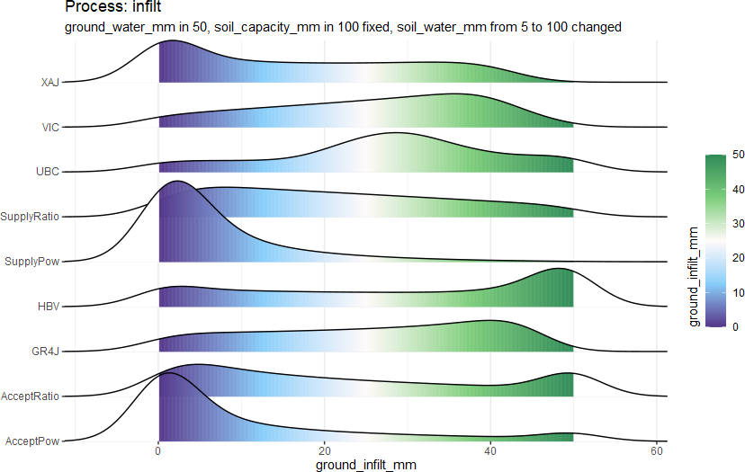
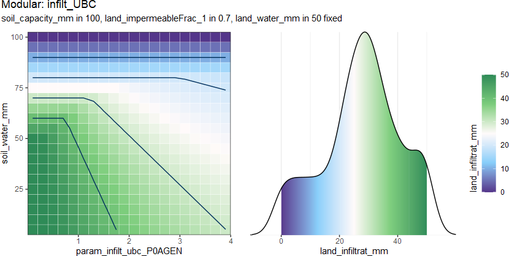
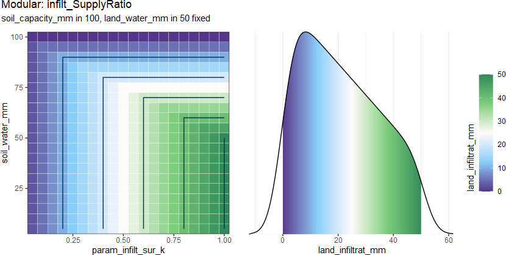
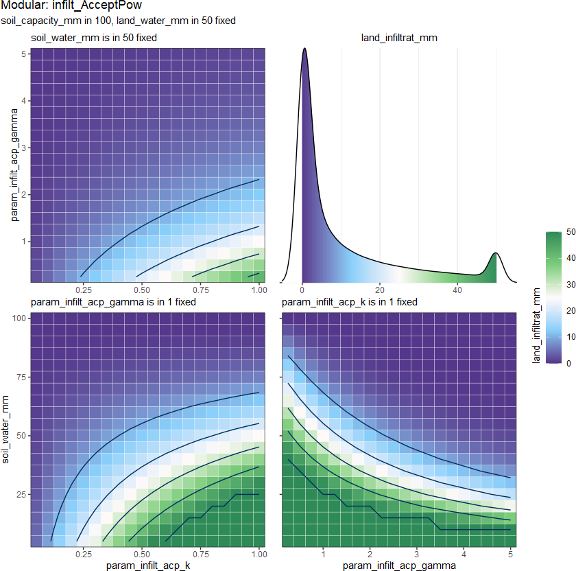
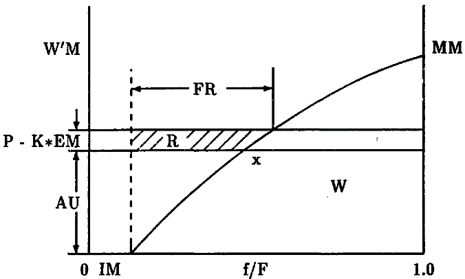

In hydrological modeling, infiltration refers to the process by which water from precipitation snowmelt or irrigation enters the soil (Maidment 1993) .
Under the concept of the conceptual HM, the flux of infiltration is always calculated by the amount of water on the land \(W_{land}\), which can be precipitation, precipitation after interception, or precipitation with snowmelt, among others. The second point to consider is the water acceptability of the soil layer (\(C_{soil} - W_{soil}\)).
So we can give the function from:
\[F_{iflt} = f_{infilt}(D_{land}, D_{soil})\]
to:
\[F_{iflt} = f_{infilt}(W_{land}, W_{soil}, C_{soil}, ...)\]
some methods will tread the infiltartion as the part of th pounded water so there is also:
\[F_{iflt} = k^* W_{land}\]
where
\(F_{iflt}\) is
infilt_mm\(W_{land}\) is
land_water_mm\(W_{soil}\) is
soil_water_mm\(C_{soil}\) is
soil_capacity_mm\(k^*\) is estimated ratio.
The output density distribution from 9 methods:

Usage
infilt_GR4J(land_water_mm, soil_water_mm, soil_capacity_mm)
infilt_UBC(
land_water_mm,
land_impermeableFrac_1,
soil_water_mm,
soil_capacity_mm,
param_infilt_ubc_P0AGEN
)
infilt_SupplyRatio(
land_water_mm,
soil_water_mm,
soil_capacity_mm,
param_infilt_sur_k
)
infilt_AcceptRatio(
land_water_mm,
soil_water_mm,
soil_capacity_mm,
param_infilt_acr_k
)
infilt_SupplyPow(
land_water_mm,
soil_water_mm,
soil_capacity_mm,
param_infilt_sup_k,
param_infilt_sup_gamma
)
infilt_AcceptPow(
land_water_mm,
soil_water_mm,
soil_capacity_mm,
param_infilt_acp_k,
param_infilt_acp_gamma
)
infilt_HBV(
land_water_mm,
soil_water_mm,
soil_capacity_mm,
param_infilt_hbv_beta
)
infilt_XAJ(land_water_mm, soil_water_mm, soil_capacity_mm, param_infilt_xaj_B)
infilt_VIC(land_water_mm, soil_water_mm, soil_capacity_mm, param_infilt_vic_B)Arguments
- land_water_mm
(mm/m2) pounded water volume in
landLyand there is no limit, different thanland_interceptWater_mm- soil_water_mm
(mm/m2) water volume in
soilLy- soil_capacity_mm
(mm/m2) average soil Capacity (maximal storage capacity)
- land_impermeableFrac_1
<0, 1> the maximum impermeable fraction when th soil is fully saturated
- param_infilt_ubc_P0AGEN
<0.1, 4> coefficient parameter for
infilt_UBC()- param_infilt_sur_k
<0.01, 1> coefficient parameter for
infilt_SupplyRatio()- param_infilt_acr_k
<0.01, 1> coefficient parameter for
infilt_AcceptRatio()- param_infilt_sup_k
<0.01, 1> coefficient parameter for
infilt_SupplyPow()- param_infilt_sup_gamma
<0, 1> parameters for
infilt_SupplyPow()- param_infilt_acp_k
<0.01, 1> coefficient parameter for
infilt_AcceptPow()- param_infilt_acp_gamma
<0.001, 5> parameters for
infilt_AcceptPow()- param_infilt_hbv_beta
<0.001, 5> parameters for
infilt_HBV()- param_infilt_xaj_B
<0.01, 3> parameters for
infilt_XAJ()- param_infilt_vic_B
<0.01, 3> parameters for
infilt_VIC()
_GR4J (Perrin et al. 2003) :

\[F_{iflt}=\frac{C_{soil}\left(1-\left(\frac{W_{soil}}{C_{soil}}\right)^{2}\right) \tanh \left(\frac{W_{land}}{C_{soil}}\right)}{1+\frac{W_{soil}}{C_{soil}} \tanh \left(\frac{W_{land}}{C_{soil}}\right)}\]
_UBC (Quick and Pipes 1977) :

estimate the ratio \(k^*\) as: \[k^* = p_{imper} 10^{\frac{W_{soil}-C_{soil}}{p_{AGEN}}}\] where
\(p_{imper}\) is
land_impermeableFrac_1\(p_{AGEN}\) is
param_infilt_ubc_P0AGEN
_SupplyRatio:

is a very simple method, which estimate only the pounded water: \[k^* = k\] where
\(k\) is
param_infilt_sur_k
_SupplyPow:

is a very simple method, which estimate only the pounded water: \[F_{iflt} = kW_{land}^{\gamma}\] where
\(k\) is
param_infilt_sup_k\(\gamma\) is
param_infilt_sup_gamma
_AcceptPow:

\[F_{iflt} = k \left(\frac{C_{soil} - W_{soil}}{C_{soil}} \right)^{\gamma}\] where
\(k\) is
param_infilt_acp_k\(\gamma\) is
param_infilt_acp_gamma
_HBV (Lindstroem et al. 1997) :

estimate the ratio \(k^*\) as: \[k^* = 1-\left(\frac{W_{soil}}{C_{soil}}\right)^{\beta}\] where
\(\beta\) is
param_infilt_hbv_beta
_XAJ (Zhao 1992) :

\[F_{iflt} = MM \frac{\left( \frac{MM - AU}{MM} \right)^{B+1} - \left( \frac{MM - AU - W_{land}}{MM} \right)^{B+1}}{B+1}\] \[AU = MM - \left( \frac{(1 - W_{soil})(B+1)}{MM} \right)^{1 / B - 1} \] \[MM = C_{soil}(B+1) \] where
\(B\) is
param_infilt_xaj_B

_VIC (Wood et al. 1992) :

\[F_{infilt} = \int_{i_{0}}^{i_{0}+P} A(i) {\rm d} i\] \[i = C_{soil}(B+1) \left[ 1 - (1-A)^{1/B} \right]\] where
\(B\) is
param_infilt_vic_B
References
Lindstroem G, Johansson B, Persson M, Gardelin M, Bergstroem S (1997).
“Development and Test of the Distributed HBV-96 Hydrological Model.”
Journal of Hydrology, 201, 272--288.
doi: 10.1016/S0022-1694(97)00041-3
.
Maidment DR (1993).
Handbook of Hydrology, volume 31.
McGraw-Hill Education Ltd.
ISBN 0-07-039735-5.
Perrin C, Michel C, Andr攼㸹assian V (2003).
“Improvement of a Parsimonious Model for Streamflow Simulation.”
Journal of Hydrology, 279(1-4), 275--289.
ISSN 00221694, doi: 10.1016/S0022-1694(03)00225-7
.
Quick MC, Pipes A (1977).
“U.B.C. WATERSHED MODEL / Le Mod攼㸸le Du Bassin Versant U.C.B.”
Hydrological Sciences Bulletin, 22(1), 153--161.
ISSN 0303-6936, doi: 10.1080/02626667709491701
.
Wood EF, Lettenmaier DP, Zartarian VG (1992).
“A Land-Surface Hydrology Parameterization with Subgrid Variability for General Circulation Models.”
Journal of Geophysical Research, 97(D3), 2717.
ISSN 0148-0227.
Zhao R (1992).
“The Xinanjiang Model Applied in China.”
Journal of Hydrology, 135(1), 371--381.
ISSN 0022-1694, doi: 10.1016/0022-1694(92)90096-E
.